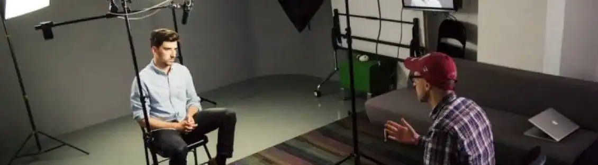
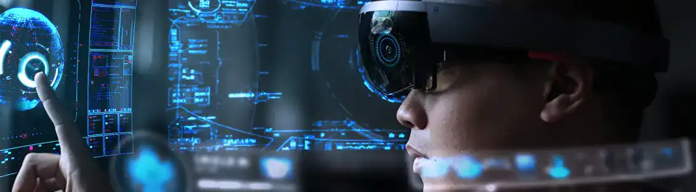
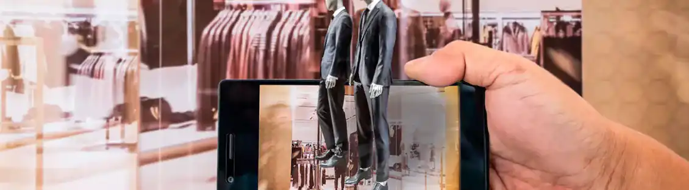
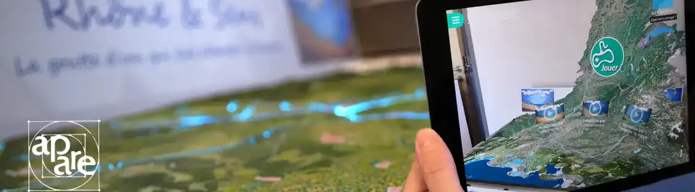

MASSILIA The Marseille of yesterday
Technological advancement
Technology has benefited many people. Now every artist can express his work via social networks and create an audience. We can think of a person who sings very well. The advantage of technology can be to expose oneself on social networks to try to be spotted by producers or for castings.

But technology has helped medicine. It has helped medicine. For other uses we can talk about augmented reality (AR) where the latter refers to the concept of live infographics added to the vision of the real world. It allows users to interact with a digital environment while remaining in the real world. By superimposing digital information on the real world, it improves your perception of the physical world.

Since RA technology has come a long way, it offers better use for entertainment and convenience. Augmented reality (AR) fuses the real world with computer-generated data to create an improved version. For example, you can use the EN to view traffic updates in real time or to plan your daily activities. A user can also walk around and find out where the public maps are or how to get somewhere. In this way, people use AR for social, recreational and work purposes. The applications of augmented reality are endless in how you can use it to improve your life.

Augmented reality technology has come a long way since its inception over 50 years ago. Now, this technology has applications in entertainment, education and navigation. The biggest obstacle for this technology is the creation of homogeneous 3D models that must be realistic for the user. However, once this obstacle is overcome, augmented reality will revolutionize the way we interact with our environment every day!

.webp)